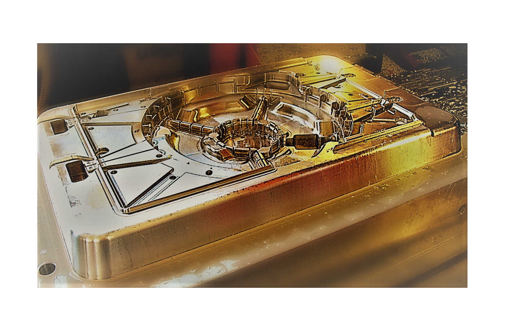

Dal 1964 la S.T.L. opera sul mercato italiano e internazionale nella progettazione e produzione di stampi per materiali plastici e per la trancia di lamiera. Il punto di partenza coincide con la costruzione del primo stampo di trancia; con l’avvento dell’utilizzo della plastica, l’organizzazione si è prontamente adeguata e specializzata nel settore plastico. Oggi, S.T.L. è in grado di offrire un servizio completo, dalla consulenza alla progettazione, allo stampaggio del prodotto finito fino all’assistenza. Grazie alla sua esperienza, S.T.L. è in grado di realizzare prodotti con elevato valore estetico e ad alto contenuto tecnologico. Sempre nel più totale rispetto dei tempi di consegna. Attualmente costituisce un punto di riferimento per tante aziende nei settori automotive, aerospaziale, elettronico, illuminazione, elettrodomestici, casalinghi e giocattoli. Importanti aziende che hanno fatto di S.T.L. un partner integrato nel loro ciclo produttivo.
Chi siamo
La nostra storia inizia da lontano.